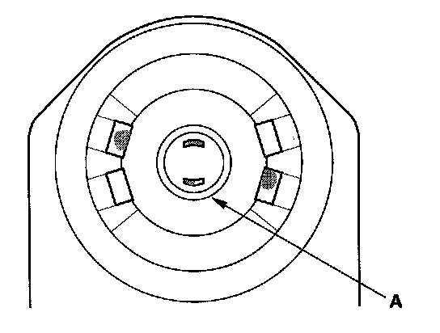
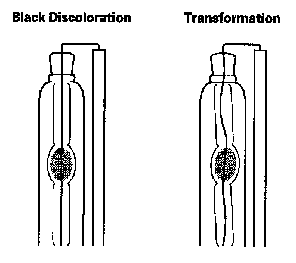
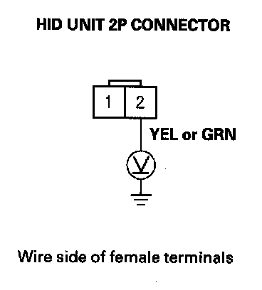
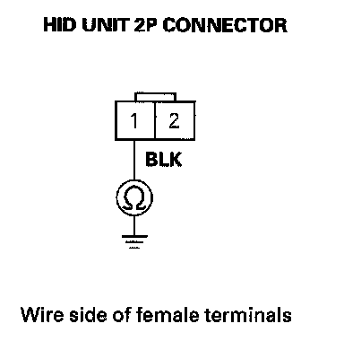

HID Lamp System Troubleshooting
HID Lamp System TroubleshootingWARNING: A transient high tension (25,000 V) occurs at the bulb sockets or the high intensity discharge (HID) lamps when the combination light switch is turned ON, it may cause serious electrical shock or electrocution if you do not observe the cautions below.
CAUTION:
- Never turn on the combination light switch before fitting the HID bulbs to their bulb sockets and completing the reassembly of the headlight assembly.
- Do not service the headlights assembly in wet conditions, such as rain or snow, near a sprinkler system, or when your hands are wet to prevent electrocution.
- Do not touch the surface of the HID bulbs with your bare hands and do not stain it with any oils and fats.
- Do not disassemble the inverter unit and the igniter unit.
- Do not turn on the HID bulb by using a power source other than the battery mounted on your vehicle.
NOTE:
- Before troubleshooting, check the No. 19 (15 A), and No. 18 (15 A) fuses in the under-hood fuse/relay box.
- Cool down the HID bulb before checking.
- After checking, the HID system requires about 5 minutes to be normal condition.
- Before troubleshooting, make sure you have the anti-theft code for the radio and navigation system (if equipped).
- After connecting the battery cables, enter the anti-theft code for the radio and navigation system (if equipped), then set the clock.
1. Turn the ignition switch ON (II).
2. Select the BODY ELECTRICAL menu, then enter the HEADLIGHT COMMAND from the FUNCTIONAL TESTS, and turn the headlights on repeatedly.
Do the headlights come on?
YES - Go to the combination light switch test and the combination switch input test.
NO - Go to step 3.
3. Turn the headlight switch and the ignition switch OFF.
4. Disconnect the negative battery cable, then disconnect the positive cable.
5. Remove the bulb socket from the HID bulb.
6. Check for loose or poor connections between the bulb socket and the HID bulb.
Is the connection OK?
YES - Go to step 7.
NO - Install the bulb and the bulb socket correctly and recheck.

7. Check the condition of the HID bulb socket mating surface (A).
Are the terminals corroded or burnt?
YES - Replace the bulb socket, and recheck.
NO - Go to step 8.

8. Remove the bulb, and check the luminescence part of the HID bulb.
Is there black discoloration or transformation?
YES - Replace the HID bulb(s), and recheck.
NO - Go to step 9.
9. Substitute the right and left HID bulbs.
Does the symptom change to the other side?
YES - Replace the HID bulb and recheck.
NO - Go to step 10.
10. Turn the combination light switch OFF.
11. Disconnect the HID unit 2P connector.
12. Turn the combination light (headlight) switch ON.

13. Measure the voltage between the No. 2 terminal of the HID unit 2P connector and body ground.
Is there battery voltage?
YES - Go to step 14.
NO - Repair open in the wire between the HID unit and under-hood fuse/relay box. If the wire is OK, replace the under-hood fuse/relay box.

14. Check for continuity between the No. 1 terminal of the HID unit 2P connector and body ground.
Is there continuity?
YES - Faulty HID unit.
NO - Repair open in the wire between the HID unit and body ground. If the wire is OK, check for poor ground (G201/G301).